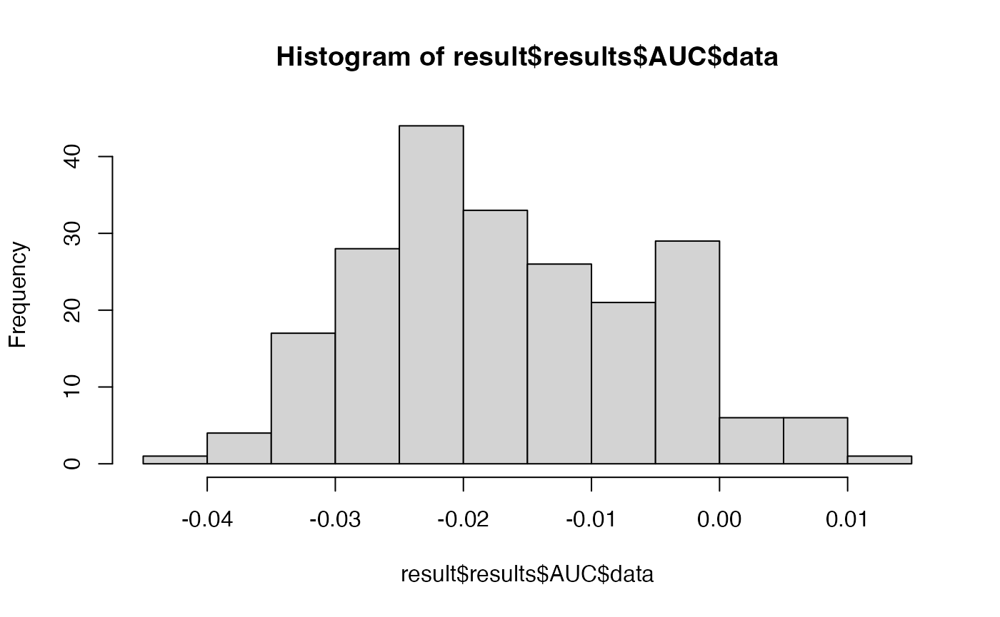

Searchlight Analysis
Bradley Buchsbaum
2019-03-10
Searchlight_Analysis.RmdSearchlight Analysis
## Warning: character(0)Generate a volumetric dataset with 100 observations and two classes
To generate a dataset we use the gen_sample_dataset function. We are creating a 4-dimensional neuroimaging dataset, with 6-by-6-by-6 spatial dimensions and 80 observations in the 4th dimension. These 80 observations are divided into 4 blocks, each consisting of 20 trials. The generated y variable is a factor with 2 levels (‘a’ and ‘b’). the gen_sample_dataset function creates a list with two elements: an mvpa_dataset object (dataset) and an mvpa_design object (design). The first contains information about the data itself and the second contains information about the experimental design.
dataset <- gen_sample_dataset(D=c(6,6,6), nobs = 80, blocks=4, nlevels=2)
print(dataset)## $dataset
## mvpa_dataset:
## train_data: DenseNeuroVec
## Type : DenseNeuroVec
## Dimension : 6 6 6 80
## Spacing : 1 X 1 X 1
## Origin : 0 X 0 X 0
## Axes : Left-to-Right Posterior-to-Anterior Inferior-to-Superior
## Coordinate Transform : 1 0 0 0 0 1 0 0 0 0 1 0 0 0 0 1
## test_data: none.
## mask areas: 1/93
## mask cardinality: 93
##
## $design
## mvpa_design:
## training observations: 80
## training levels: a b
## no test observations.
## training response: Factor w/ 2 levels "a","b": 1 2 2 2 1 2 1 2 1 1 ...
## block var: int [1:80] 1 2 3 4 1 2 3 4 1 2 ...Create a cross-validation object using a pre-defined blocking variable.
Most MVPA analyses involve the collection of fMRI data over a series of scanning runs, or “blocks”. Due to intra-block serial correlations, it makes sense to take advantage of this block structure for cross-validation. In other words, we want to train the classifier on k-1 blocks and test on the set of trials for all k held out blocks. This is a form of leave-one-group-out cross-validation, which is encapsulated in the blocked_cross_validation function.
block <- dataset$design$block_var
crossval <- blocked_cross_validation(block)
crossval## cross-validation: blocked
## nobservations: 80
## nfolds: 4
## block sizes: 20 20 20 20
Construct an mvpa_model object with a Shrinkage Discriminant Analysis classifier (sda_notune)
The “sda_notune” model is an sda model where the lambda parameter is estimated from the training data. See documentation in the sda package package.
sda_model <- load_model("sda_notune")
model <- mvpa_model(model=sda_model, dataset=dataset$dataset, design=dataset$design, crossval=crossval)
model## mvpa_model object.
## model: sda_notune
## model type: classification
## cross-validation: blocked
## nobservations: 80
## nfolds: 4
## block sizes: 20 20 20 20
## mvpa_dataset:
## train_data: DenseNeuroVec
## Type : DenseNeuroVec
## Dimension : 6 6 6 80
## Spacing : 1 X 1 X 1
## Origin : 0 X 0 X 0
## Axes : Left-to-Right Posterior-to-Anterior Inferior-to-Superior
## Coordinate Transform : 1 0 0 0 0 1 0 0 0 0 1 0 0 0 0 1
## test_data: none.
## mask areas: 1/93
## mask cardinality: 93
## mvpa_design:
## training observations: 80
## training levels: a b
## no test observations.
## training response: Factor w/ 2 levels "a","b": 1 2 2 2 1 2 1 2 1 1 ...
## block var: int [1:80] 1 2 3 4 1 2 3 4 1 2 ...Run a standard searchlight analysis
The output of run_searchlight is a list of image volumes containing performance measures for each spherical searchlight. For a two-class classification problem, there are three output measures: Accuracy and AUC (AUC has .5 subtracted from it, so that it is centered at 0 rather than .5). Accuracy is the raw cross-validated accuracy measure for each centroid and AUC is the area under the curve statistic. The radius argument indicates the radius in mm of the spherical searchlight. Finally, method indicates the searchlight scheme, which can be standard or randomized. See below for more information about the randomized searchlight.
result <- run_searchlight(model, radius=4, method="standard")## INFO [2019-03-10 08:40:42] model is: sda_notune
## INFO [2019-03-10 08:40:42] running standard searchlight with 4 radius## Warning: package 'purrr' was built under R version 3.5.2result## $Accuracy
## NeuroVol
## Type : DenseNeuroVol
## Dimension : 6 6 6
## Spacing : 1 X 1 X 1
## Origin : 0 X 0 X 0
## Axes : Left-to-Right Posterior-to-Anterior Inferior-to-Superior
##
## $AUC
## NeuroVol
## Type : DenseNeuroVol
## Dimension : 6 6 6
## Spacing : 1 X 1 X 1
## Origin : 0 X 0 X 0
## Axes : Left-to-Right Posterior-to-Anterior Inferior-to-Superiorhist(result$AUC)
Run a randomized searchlight analysis
A randomized searchlight analysis is an iterative procedure in which searchlight regions are sampled without replacement from the voxel set. A classification analysis is run for each region, and the result is recorded for the center voxel and all other voxels in the region. This is done for each of niter times, where each iteration involves an exhaustive sampling of the voxel set. The performance at each voxel is the average performance for the set of analyses in which the given voxel was included as a feature. The result will be similar to the standard searchlight procedure, but emphasizes the contribution of a given voxel across different local contexts to classification performance. This should in principle offer slightly better spatial localization than the standard searchlight. The randomized searchlight procedure can also be faster, because the total number of estimated models is a function of nvoxels/radius * niter, which will be smaller than nvoxels for many choices of radius and niter.
result <- run_searchlight(model, radius=4, method="randomized", niter=8)## INFO [2019-03-10 08:40:55] model is: sda_notune
## INFO [2019-03-10 08:40:55] running randomized searchlight with 4 radius and 8 iterations
## INFO [2019-03-10 08:40:55] searchlight iteration: 1
## INFO [2019-03-10 08:40:55] searchlight iteration: 2
## INFO [2019-03-10 08:40:56] searchlight iteration: 3
## INFO [2019-03-10 08:40:56] searchlight iteration: 4
## INFO [2019-03-10 08:40:56] searchlight iteration: 5
## INFO [2019-03-10 08:40:57] searchlight iteration: 6
## INFO [2019-03-10 08:40:57] searchlight iteration: 7
## INFO [2019-03-10 08:40:57] searchlight iteration: 8## number of models fit: 32result## $Accuracy
## NeuroVol
## Type : DenseNeuroVol
## Dimension : 6 6 6
## Spacing : 1 X 1 X 1
## Origin : 0 X 0 X 0
## Axes : Left-to-Right Posterior-to-Anterior Inferior-to-Superior
##
## $AUC
## NeuroVol
## Type : DenseNeuroVol
## Dimension : 6 6 6
## Spacing : 1 X 1 X 1
## Origin : 0 X 0 X 0
## Axes : Left-to-Right Posterior-to-Anterior Inferior-to-Superiorhist(result$AUC)
Using different classifiers
All of the classifiers available in the caret package can be used (in theory) for a searchlight analysis. For example, we can run an analysis using a linear support vector (svmLinear) machine as follows:
svm_model <- load_model("svmLinear")
model <- mvpa_model(model=svm_model, dataset=dataset$dataset, design=dataset$design, crossval=crossval)
result_svm <- run_searchlight(model, radius=4, method="randomized", niter=2)## INFO [2019-03-10 08:40:59] model is: svmLinear
## INFO [2019-03-10 08:40:59] running randomized searchlight with 4 radius and 2 iterations
## INFO [2019-03-10 08:40:59] searchlight iteration: 1
## maximum number of iterations reached -0.0006737633 0.0006741098INFO [2019-03-10 08:41:01] searchlight iteration: 2## number of models fit: 8Here we use a random forest classifier. To fix the tuning parameter mtry at a known value, we supply a tune_grid argument to the mvpa_model function. Here, we set mtry to 2. Sinc ethere is only one value, it means that this parameter will be fixed. If we supply a grid of values, then the paramter will be tuned for each searchlight sample. Since parameter tuning is costly in terms of computing time, this is not a recommended approach unless one has a great deal of computing power or one is running the searchlight over a small mask.
rf_model <- load_model("rf")
model <- mvpa_model(model=rf_model, dataset=dataset$dataset, design=dataset$design, crossval=crossval, tune_grid=data.frame(mtry=2))
result_rf <- run_searchlight(model, radius=4, method="randomized", niter=2)## INFO [2019-03-10 08:41:02] model is: rf
## INFO [2019-03-10 08:41:02] running randomized searchlight with 4 radius and 2 iterations
## INFO [2019-03-10 08:41:02] searchlight iteration: 1
## INFO [2019-03-10 08:41:04] searchlight iteration: 2## number of models fit: 8Here we specify a range of values for the mtry tuning parameter. In this case, by supplying the tune_reps argument to mvpa_model we control the number of resamples used to tune the model parameters. The default is 10, but here we speed up execution time by reducing it to 2. In general, more resamples are required to reliably estimate optimal tuning parameters. This means for a whole-brain searchlight, parameter tuning is generally impractical. This is why the classiifer sda_notune is a good choice for searchlight analyses, since it “works well” with default tuning parameters.
grid <- data.frame(mtry=c(2,4,6,8))
model2 <- mvpa_model(model=rf_model, dataset=dataset$dataset, design=dataset$design, crossval=crossval, tune_grid=grid, tune_reps=2)
result_rf_tuned <- run_searchlight(model2, radius=6, method="randomized", niter=1)